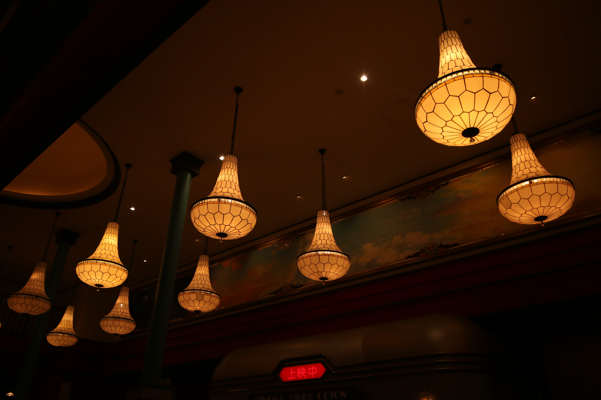

古物・機械
カメラ以外にも、個人的に所有してい古物を記録していく場所です。
基本的に素人目ですがわかったことや入手した経緯などをまとめていきます。
恐らくかなり執筆は遅いですが気長にお待ちください。

記事一覧
-
ワープロ(準備中・・・) -
日本語タイプライター(準備中・・・) -
懐中時計(準備中・・・) -
VHS(準備中・・・) - その他の古物・機械も増えたりしたら書くつもりです！